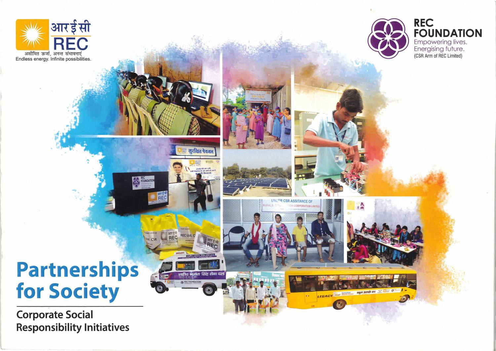
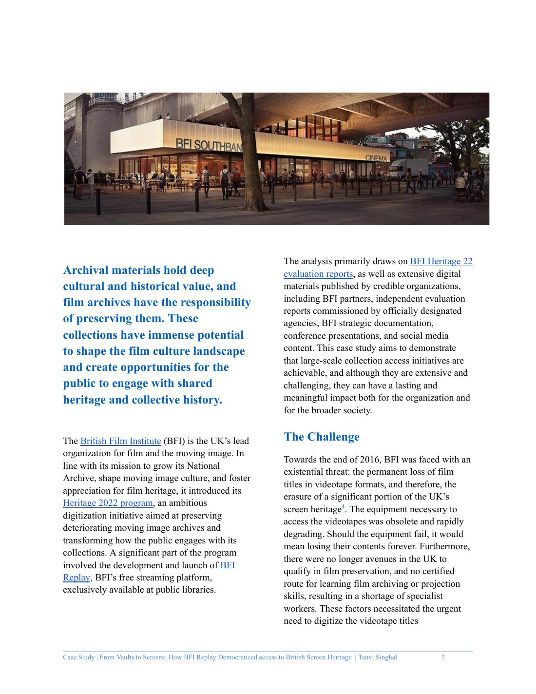
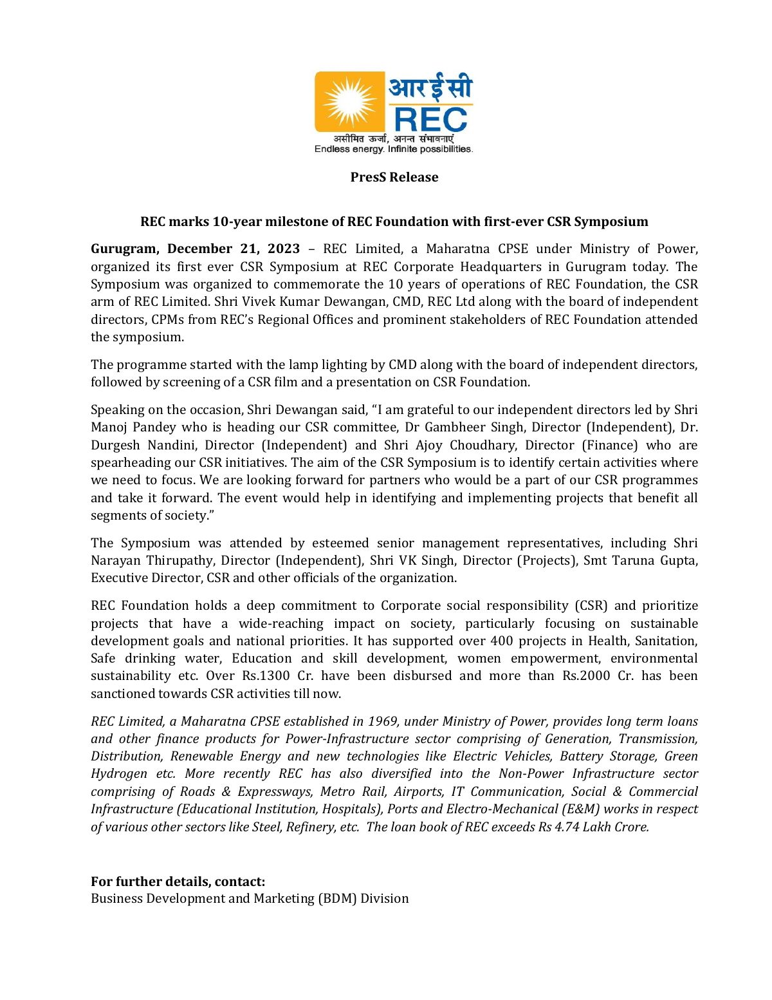
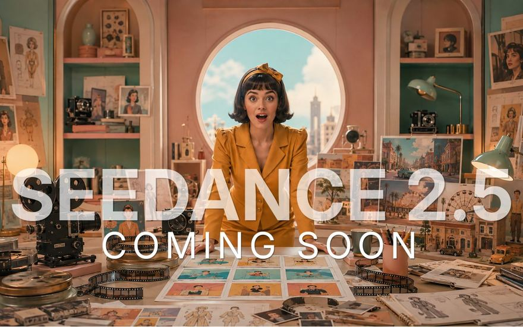
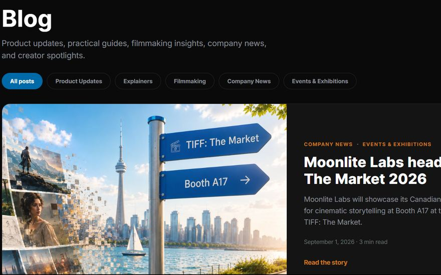

Writing
A selection of my writing, from bylined articles and executive messages to a corporate history book, press releases and blog posts.
Bylined articles and thought leadership
Articles under my own byline, and executive messages and speaker materials I wrote for leaders.

Responsible AI chatbot deployment
My guest article argues communications and marketing teams should shape customer-facing AI chatbots from the start, with seven practical considerations.
Read the article ↗
Chairman's message to shareholders
The Chairman's speech at REC's 55th Annual General Meeting adapted into a published newspaper feature for a national audience.
My role Worked with the Chairman on content, design and photographs, added performance data and planned the media placement.
View the feature
Founder and CEO session description
The description for the founder's featured talk at VRTO, part of the speaking and exhibition partnership I secured.
See the session ↗
Founder and CEO speaker bio
A VRTO speaker biography connecting the founder's background in art, computer science and AI to the company's mission.
Read the bio ↗Books and long-form publications
Research-based, long-form writing, from a corporate history book to impact publications and a case study.

A Journey Towards Infinity
REC's 50th anniversary book, telling five decades of the company and India's power sector through Panchatattva, the five elements.
My role Produced the book through archival research and interviews with former employees.
Read the book, 88 pages
Lighting Lives: India's journey towards 100% household electrification
Beneficiary stories and photography paired with program milestones and data, told through families receiving electricity for the first time.
Read the book, 51 pages
Powering Smiles: Illuminating India
The national rural electrification program, from strategy and milestones to the communities it reached, with data, field photography and first-person accounts.
Read the publication, 27 pages

Partnerships for Society
REC Foundation's programs in health, education, skills, women's empowerment, sanitation, rural development and environmental sustainability.
My role Wrote, edited and synthesized program information, conceptualized the 4P CSR model organizing the book, and oversaw the design.
Read the publication, 18 pages

From Vaults to Screens: How BFI Replay Democratized Access to British Screen Heritage
How the British Film Institute preserved 100,000 videotapes and reached about 2,000 UK public libraries through a free streaming platform.
My role Researched and wrote the case study.
Read the case study, 8 pagesPress releases and published features
News and features written for media, investors, government and the public.

REC: Energizing India's Growth Story
A corporate profile of REC's lending, renewable energy ambitions, innovation and financial strength.
My role Gathered and analyzed departmental data, shaped the narrative, oversaw the design and managed approvals.
View the feature
Inaugural Euro-Yen green bond issue
Announcement of REC's first yen-denominated green bonds, written for financial and international media with clear transaction highlights.
Read the release
Annual financial results, FY21
Board-approved annual results translated into headline operational and financial highlights for business media and investors.
Read the release
Workshop on an integrated digital platform for power distribution utilities
A national platform to track and monitor power distribution programs, with more than 500 officials taking part in person and online.
My role Gathered the information, shaped the story and managed departmental approvals.
Read the release

REC Foundation marks 10 years with its first CSR Symposium
Announcement of the symposium marking a decade of REC's CSR arm, bringing together the Board, regional teams and Foundation stakeholders.
Read the releaseBlog and web writing
Blog posts and web copy for Moonlite Labs.

Seedance 2.5: A new era of AI-powered filmmaking?
Read the article ↗
5 Highlights from Our Week at the First-Ever TIFF: The Market
Read the article ↗
Moonlite Labs heads to TIFF: The Market 2026
Read the article ↗AI for Marketing page
A landing page for brand teams and agencies, built on a generate, refine and publish workflow with a book-a-demo call to action.
See the page ↗